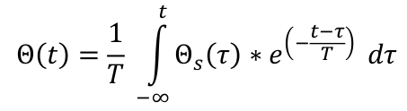
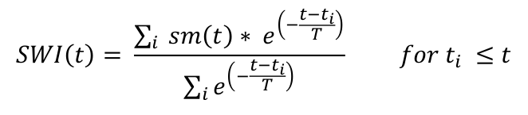
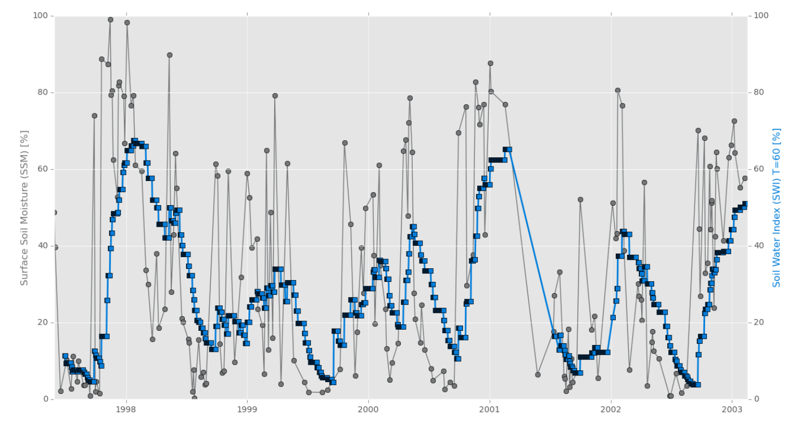
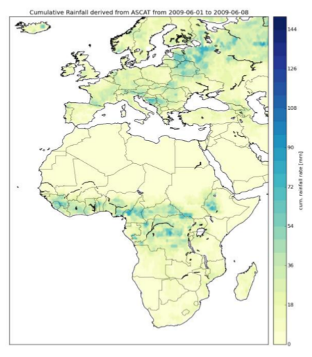

Soil Moisture
Lecture 8: Applications

Funded by:


Introduction
There's a wide number of possible applications for surface soil moisture.
You will be introduced to three of them:
- From surface soil moisture to root zone soil moisture
- Creation of a Climate Data Record (ESA CCI soil moisture)
- Rainfall estimation through surface soil moisture observations
From surface soil moisture to root zone soil moisture
Introduction
- ESCAT soil moisture: water content of the first few centimetres of the soil profile
- penetration depth of C-band microwaves: 0.5 - 2 cm
- Root zone soil moisture: the water content that is available for vegetation
Required for...- numerical weather prediction
- hydrological studies
- vegetation studies
Relationship surface sm/root zone sm
- Relationship between surface and root zone soil moisture: infiltration
infiltration: dependent on a large number of parameters (soil texture and structure, vegetation coverage, soil temperature, present water content...)
those parameters are not known on a global scale
⇒ empirical method for estimating root zone soil moisture from surface soil moisture measurements (Wagner et al. 1999)
Two-layer water model
- First layer:
- C-band microwave accessible top-soil layer
- highly dynamic due to precipitation, evapotranspiration and runoff
- Second layer:
- reservoir, coupled with the atmosphere via the first layer exclusively
- temporal variability decreases with increasing reservoir depth
- ⇒ the water content stored in the reservoir is a function of preceding precipitation events
Water balance equation and SWI
Water balance equation for the reservoir:
, with T=L/CΘ...volumetric water content of the reservoir
ΘS...water content of the surface layer
t...time
L...depth of the reservoir layer
C...pseudo diffusivity coefficient incorporating all soil properties
T...characteristic time length (increases with L and decreases with C)
Discrete formulation, defined as soil water index (SWI):
SSM vs. SWI
Source: SCIRoCCo Handbook
Creation of a CLimate Data Record
ESA CCI soil moisture
In 2010, surface soil moisture was recognised as an Essential Climate Variable (ECV)
Important dataset for IPCC (Intergovernmental Panel on Climate Change) and UNFCCC (United Nations Framework Convention on Climate Change)
ECV data records should be as long, complete and consistent as possible
make use of multiple data sources, including active and passive microwave observations (from ESCAT, ASCAT, SMMR, SSM/I, TMI, AMSR-E, Windsat, AMSR2)
Production scheme I
- Level 2 soil moisture retrieval separately for each satellite dataset
- Fusion of active Level 2 datasets
- Fusion of passive Level 2 datasets
- Merging of the active and passive datasets from steps 2 and 3
It was found that the merging process improved the spatial and temporal coverage while minimally impacting the accuracy of the soil moisture retrievals (Liu et al., 2012).
Production Scheme II
Important steps in the fusion process:
- error characterisation
- matching to account for dataset specific biases
- merging
This approach allows combining surface soil moisture data derived from different instruments with substantially different
instrument characteristics.
It's straight forward to further enrich the ECV dataset with Level 2 data from other sensors (e.g. SMOS, SMAP...).
Rainfall estimation
Rainfall and soil moisture
- Soil moisture content and rainfall share a strong physical connection
- Rainfall is the main driver of temporal soil moisture variations
- Strong rainfall event:
- sudden increase in soil moisture
- followed by a smooth decline caused by evapotranspiration and drainage
Approaches to estimate and correct rainfall data
- Correction/improvement of first guess rainfall estimates
- Pellarin et al. (2008): improve rainfall estimates by using surface soil moisture observations
- Crow et al. (2009): correct land rainfall accumulation estimates using soil moisture retrievals
- Estimating rainfall
- Brocca et al. (2013): inversion of the hydrological water balance regarding soil as a
natural reservoir
- a first analysis of this approach (SM2RAIN) shows promising results
- Brocca et al. (2013): inversion of the hydrological water balance regarding soil as a
natural reservoir
Rainfall estimation
... from ASCAT surface soil moisture retrieval based on SM2RAIN
Source: SCIRoCCo Handbook